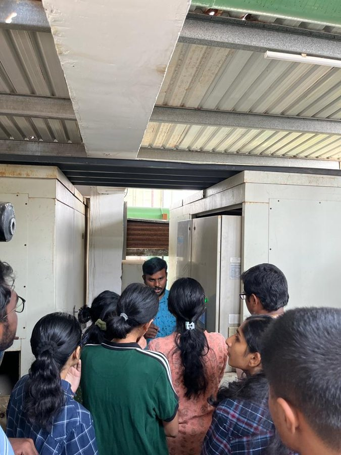

Impact
From the Energy & Emissions Research Group (EnERG), IIT Madras

IEAC student energy auditors in the field
The measure of translational research is what runs in the field — a record of firsts, deployments, and quantified outcomes.
| Measure | Figure |
|---|---|
| Industrial heat pumps deployed (TRL 9) | 50+ sites · 200+ units |
| CO₂ reduced through KISEM audits | ≈100,000 tonnes (12,000+ MToE) |
| Firms audited across 30 sectors | 255 (2,650+ recommendations) |
| Savings identified / realised | ₹180 crore / ₹60+ crore |
| Wankel expander potential in India | ≈20 GW → 80 MT CO₂e per year |
| Lowest ambient for deployed heat pumps | −35 °C (Leh/Ladakh & Sikkim) |
Case snapshots
- First in India: the 120 °C industrial heat pump
- First deployment of a 120 °C industrial heat pump in India, with emission intensity below 45% of baseline. Now a TRL-9 product at 50+ sites and 200+ units, commercialised through TrigenDC.
- Heat for the high Himalaya
- Very-low-ambient heat pumps deployed in Leh/Ladakh and Sikkim, operating down to −35 °C for ITBP and PWD — roughly a 70% CO₂ reduction versus diesel heating.
- The Wankel steam expander
- Patented dynamic admission control recovers power from steam pressure reduction — an estimated 20 GW opportunity across Indian industry.
- KISEM: energy efficiency at MSME scale
- 255 firms audited across 30 sectors; ₹180 Cr savings identified, ₹60+ Cr realised, ≈100,000 tonnes CO₂ avoided. Backed by ₹20 Cr + ₹21 Cr in Kotak CSR funding.
- The Energy Consortium
- 52 faculty, 12 industry members; India's first mobile CO₂-capture demonstrator; represented India at COP28.
- Nirmaan pre-incubation
- Seeded 20+ student startups (including Tan90 and Modulus Housing), collectively valued at about ₹1,000 crore.
Testimonials
From ~50 industry appreciation letters received by the KISEM audit network across steel, aluminium, textiles, FMCG, automotive, hospitality, rubber, and paper.
Loading testimonials…